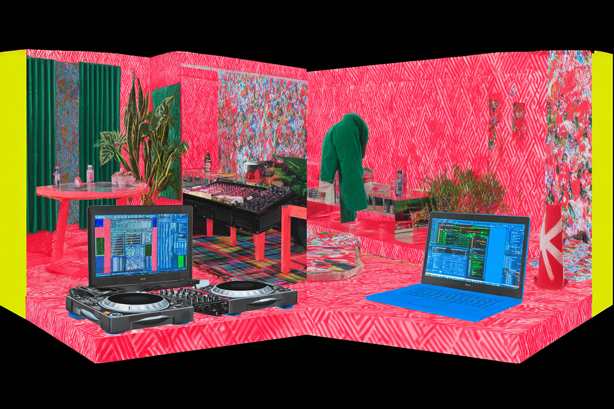
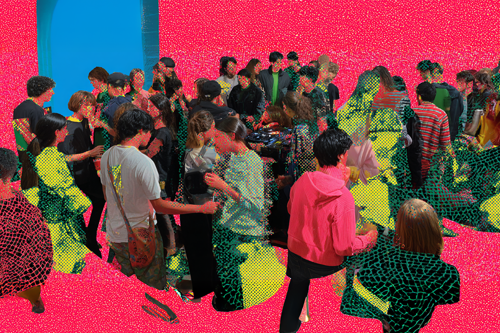
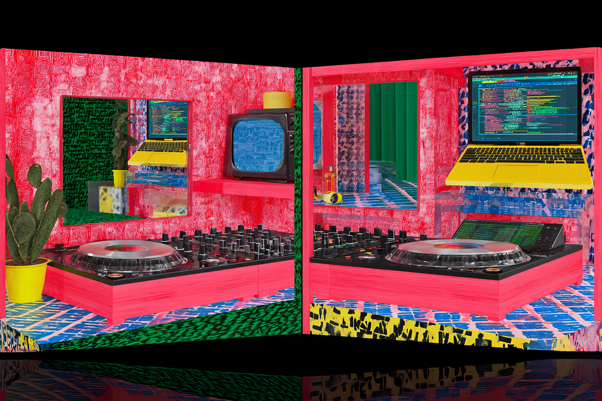
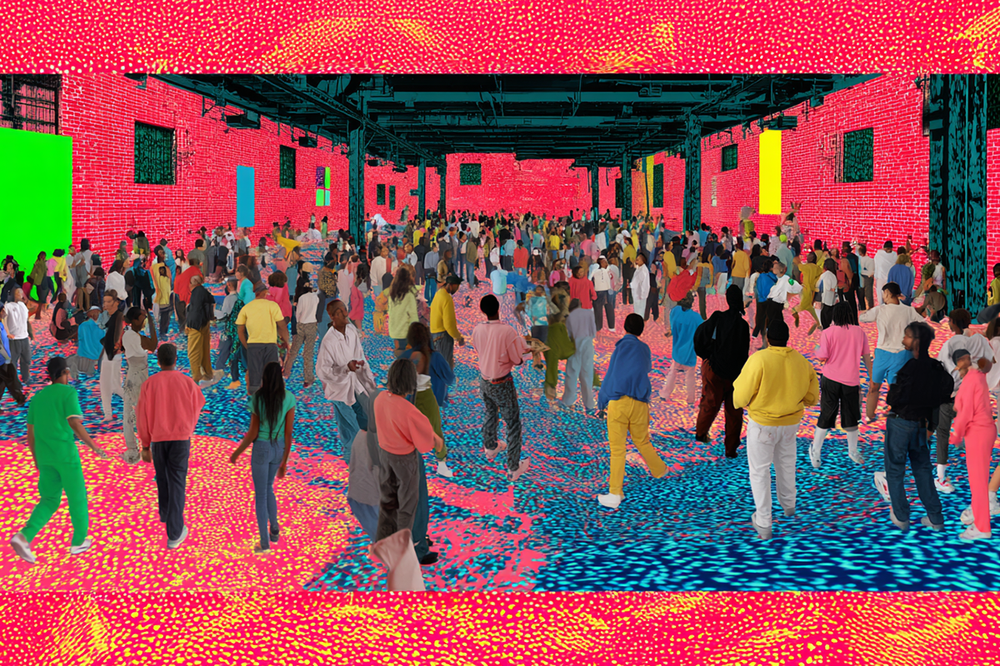

BOILER ROOM: electrónica del club al living
El formato que llevó la electrónica del underground al mainstream
El formato que llevó la electrónica del underground al mainstream

Si hay algo que sabemos de la música electrónica, es que muchas de sus escenas comienzan en las sombras, con sets que cuentan con números moderados de espectadores y que, en realidad, parte de su mística recae en esas mismas cualidades.
Por eso es que cuando se sabe que alguno de estos shows logra salir del previo boca en boca para transformarse en un espectáculo que es esperado por miles de personas, cabe preguntarse qué fue lo que lo diferenció de sus pares.
Ese es el caso de BOILER ROOM, un espacio donde la música se toma los clubes alrededor de todo el mundo. Pero ¿cómo lograron hacerse de un nombre reconocido en la escena electrónica global?

Si nos apegamos a la historia y al contexto tras estos eventos, tenemos que remontarnos al 2010, en Londres. Blaise Bellville y Thristian Richards transmiten la primera sesión desde una sala improvisada (literalmente una “boiler room”) con una webcam apuntando al DJ y con un presupuesto más que acotado. Cero público. Todo experimental. Parecido al concepto actual, pero mucho más austero.
Un año después, este pequeño encuentro comenzó a hacerse popular y el concepto se afianza: el DJ al centro, con su set, y el público bailando alrededor. Los boiler rooms ya no solo ocurrían en Londres, sino que se expandieron por toda Europa. Como era de esperar en aquellos años, las noticias de los próximos eventos corrían por internet, a través de blogs y foros especializados.
2012, la cosa explora de manera internacional y ya no solo se expande por Europa, sino que comienzan a tener sus primeros shows en Nueva York y Los Angeles, incluyendo a DJs de otras latitudes.
El 2014 es cuando cerramos los inicios, dando el espacio a un archivo online de DJs populares y under que comenzaron a armar sus sets de manera global. Los líderes del boiler engancharon los vídeos de los eventos en YouTube y el proyecto se transforma en una parada obligatoria para los exponentes de la electrónica, quienes encontraron una vitrina perfecta para, además, documentar la escena en sus diferentes contextos espaciales.

Con la consolidación en la escena global de la electrónica, Boiler Room se transformó en una suerte de blue print para el género en el formato online. De hecho, ya no eran miles, sino millones de personas las que, simultáneamente, esperaban las sesiones en vivo a través de YouTube.
Después de Europa y Estados Unidos, fue el turno de Asia y Latinoamérica y el 2016 se realizan las primeras sesiones en Santiago, São Paulo, Ciudad de México, Tokio, Shanghai y Seúl, abriendo ventanas a escenas antes invisibilizadas. Un año más tarde ya no solo se trataba de música electrónica, sino que exponentes de otros géneros, como el jazz y el hip-hop, comenzaron a ser parte de estos eventos.
El 2018, el Boiler Room ya tenía un festival, que eran versiones presenciales de este espectáculo, pero con espacio para muchísimo más público. En eso estaba este evento antes del 2020, cuando se dio inicio a la pandemia.
Boiler Room no se vio demasiado afectado por este complejo episodio: como ya habían fortalecido su popularidad a través de su canal de YouTube, no existió mayor cambio en su esencia, así que siguieron dando alas a lo que ya los había formado como concepto. Así, con los clubes cerrados, Boiler Room se posiciona como archivo vivo y espacio global de encuentro digital para escenas de todo el mundo.
Para el año pasado, Boiler Room había recorrido más de 200 ciudades, acumulando más de ocho mil presentaciones y organizando cerca de treinta sesiones mensuales.

Un espacio para todos
Si bien cualquiera puede ser parte de los Boiler Room a través de la compra de entradas, cuando hablo de que este es un espacio para todos, me refiero a que los artistas estrella de cada sesión pueden ser DJs experimentados, más amateur o, incluso, artistas de talla mundial que no son necesariamente reconocidos por sus carreras como DJs.
Si hablamos de artistas que tienen como actividad paralela su carrera de DJs y que fueron parte de Boiler Room, podemos nombrar a Charlie xcx (2024), Grimes (2012) y al productor Kaytranada (2013). Cabe destacar que, a pesar de que estos intérpretes son reconocidos por sus carreras como cantantes, sí se han hecho un nombre en la escena de la electrónica.
Honey Dijon, una de las DJs más influyentes de la escena house y techno, consolidó aún más su reputación internacional con su set en Boiler Room, particularmente el de 2018, que suele ser mencionado entre los más sólidos y energéticos de la plataforma por su manejo impecable del groove y su carisma. Destacamos que Honey Dijon es reconocida por su carrera en la industria de la moda y el diseño. Años más tarde, Boiler Room también se convirtió en un punto de inflexión para otra figura clave de la música electrónica contemporánea: Fred again.., productor y compositor de artistas mainstream cuyo set en Londres (2022) se volvió un fenómeno global. Su mezcla de producción en vivo, edición improvisada y performance emocional lo llevó más allá del circuito estrictamente underground, posicionándolo como un artista capaz de conectar con audiencias masivas sin perder la sensibilidad del contexto del club.

Boiler Room se ha consolidado como una vitrina global que puede catapultar a un artista a audiencias masivas, y eso se refleja en algunas de las sesiones más vistas de su historia. Entre las más reproducidas se encuentran las de Skrillex, Disclosure, la ya nombrada sesión de Kaytranada, Peggy Gou, Solomun y Carl Cox, todas convertidas en cápsulas icónicas de la cultura electrónica. Sus sets, grabados en espacios reducidos, sin filtros y con la pura energía del público como contexto, lograron expandirse más allá del circuito underground permitiendo que millones de espectadores vivieran la experiencia casi como si estuvieran ahí.
La sesión de Solomun, cabe destacar, ha sido la más vista desde que Boiler Room tiene un espacio en internet. Su set, realizado en Tulum (2015), está por llegar a los 72 millones de visitas. Sin embargo, el set realizado por Carl Cox, también es uno de los más vistos en el canal, y va por los mismos números. Su sesión subida el 2013 ya cuenta con casi 71.5 millones de reproducciones.
La historia de Boiler Room está lejos de finalizar y, cada año, con cada vídeo, termina fortaleciendo sus raíces como una de los eventos más reconocidos y renombrados en la escena de la música electrónica, sea con sus shows en vivo, como en su presencia en internet.
 Cultura
CulturaSé que suena raro hablar de calor extremo mientras en Chile todos están buscando la parka más gruesa del clóset.
 Cultura
CulturaEl hecho de que estemos entrando al mes de julio no se puede creer. Pero lo que tampoco se puede creer es la cantidad de artistas que han…
 Cultura
CulturaCuando hablamos de trabajos clásicos de la música chilena, siempre se nombran los discos de Violeta Parra, Víctor Jara, Los Jaivas o…